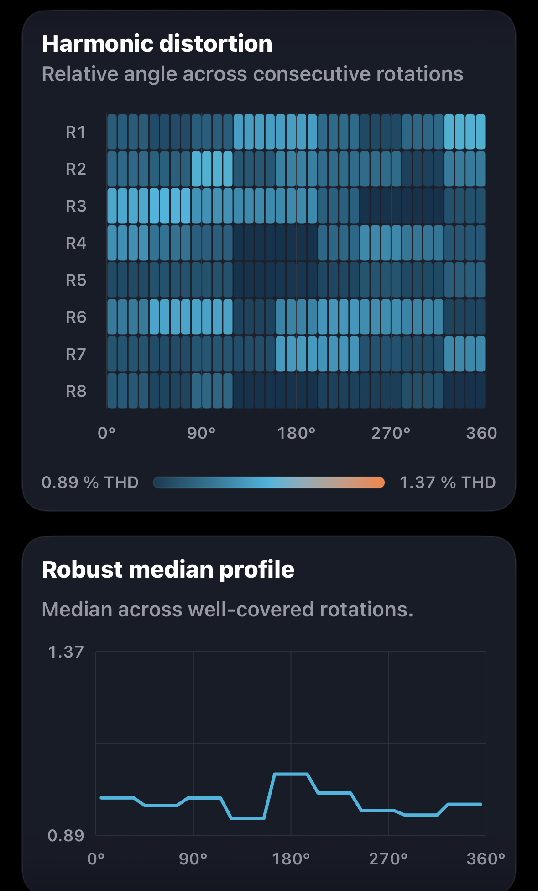
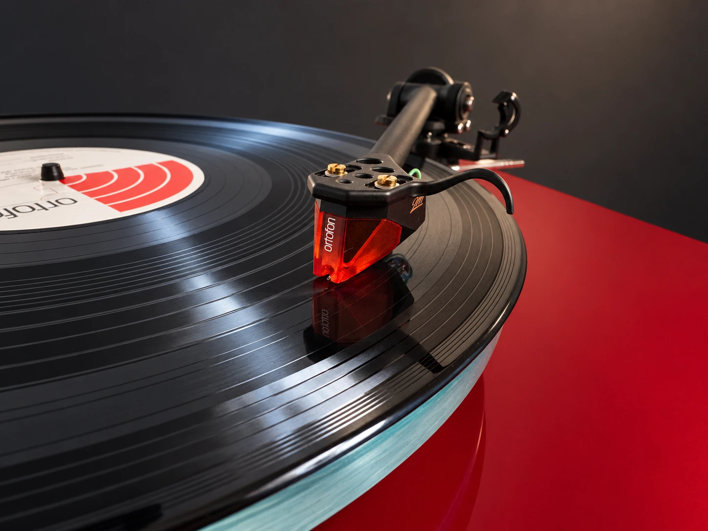
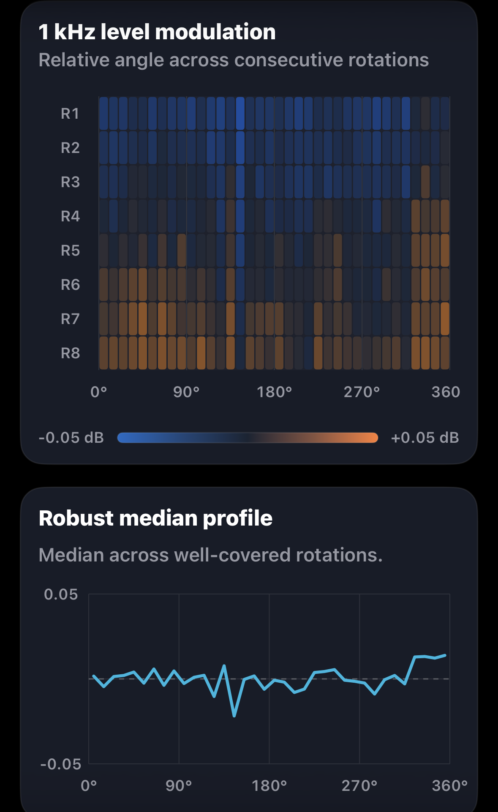
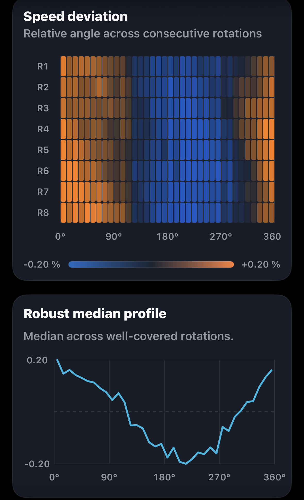

Harmonic distortion

Left channel selected

Groove Scope measurement · GS-2026-0008
A measured view of rotational behaviour, channel performance and harmonic structure in one documented analogue playback chain.
Measurement at a glance
Values are transcribed from the preserved Groove Scope PDF. Together they form a capture-specific view of primary performance and supporting channel behaviour.
Rotation fingerprints
Each view combines the angular heatmap and robust median profile produced by Groove Scope. Choose L or R independently on each card. The supplied plots are preserved without retouching; L/R assignment follows their supplied pair order. The PDF describes the 09:44 capture.

Left channel selected

Left channel selected

Left channel selected

Left channel selected
On smaller screens, swipe horizontally to compare all four cards. The left views show eight rotations (R1–R8); the right views show seven (R1–R7).
Behind the measurement
The Ortofon 2M Bronze joins the Rega P3, Audio Research SP20 and EVO4 for this 1 kHz reference capture. Its standout result is clear: 32.8 dB average channel separation, with both directions above 32 dB and only 0.78 dB between them. Channel balance of +0.53 dB adds to a convincing picture of closely matched output in this system.
At 1 kHz, Ortofon lists 26 dB channel separation and 1 dB channel balance for the 2M Bronze. Here, separation reaches 33.2 dB L→R and 32.4 dB R→L, while the 0.53 dB balance magnitude is inside that listed figure. These are encouraging in-system results; differences in test record, loading and measurement conditions prevent treating them as a cartridge-only certification. Ortofon’s published specifications ↗
What stands out
The Rega-based chain averaged 33.34 RPM, just +0.01% from nominal, with 0.027% DIN-shaped wow and flutter RMS. These describe playback stability in the complete system. The speed profiles show a recurring broad rise and fall; level-modulation median profiles stay close to zero on the displayed ±0.05 dB scale.
THD measured 0.98% left and 1.13% right. The source report flags variation in the right-channel third harmonic and recommends repeating before changing cartridge setup. That focused follow-up will establish how consistently the harmonic result repeats; the plots alone do not establish its cause.
Measurement chain
The source report title identifies this playback chain; its input field names EVO4.
Open technical record
The editorial review connects directly to the source report, structured record, checksums, measurement method and original asset archive.
Measurement results
Every reported numeric result in one place: playback speed, weighted and raw stability, channel behaviour, distortion and the second through fifth harmonics.
| Metric | Measured result |
|---|---|
| Playback speed under stylus load | 33.34 RPM |
| Playback speed error | +0.01% vs 33⅓ RPM |
| Settled speed range | 33.26–33.41 RPM |
| Settled speed span | 0.15 RPM |
| DIN-shaped wow & flutter RMS | 0.027% |
| Raw speed variation RMS | ±0.125% |
| Raw speed variation, 2-sigma | ±0.249% |
| Raw wow RMS | 0.120% |
| Raw flutter RMS | 0.032% |
| Channel balance, L−R | +0.53 dB |
| Average channel separation at 1 kHz | 32.8 dB |
| Electrical crosstalk, L→R | −33.2 dB |
| Electrical crosstalk, R→L | −32.4 dB |
| Crosstalk directional difference | 0.78 dB |
| Total harmonic distortion | Left 0.98%; right 1.13% |
| THD difference, L−R | −0.15 percentage points (source report) |
| Second harmonic (H2) | Left −40.3 dB; right −39.1 dB |
| Third harmonic (H3) | Left −59.5 dB; right −57.1 dB |
| Fourth harmonic (H4) | Left −63.2 dB; right −58.9 dB |
| Fifth harmonic (H5) | Left −74.5 dB; right −66.6 dB |
| H2 difference summary | Right 1.2 dB higher (source report) |
| H3 difference summary | Right 2.4 dB higher (source report) |
| Harmonic reliability | Right-channel H3 changed most; repeat before setup changes. |
Unweighted results complement the DIN-shaped measurement. The report advises a repeat because the right-channel third harmonic changed most during recording. Reported differences retain the source precision; they may differ from subtraction of rounded channel values.